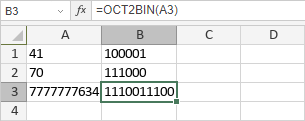

OCT2BIN funkcija
OCT2BIN funkcija je jedna od inženjerskih funkcija. Koristi se za konvertovanje oktalnog broja u binarni broj.
Sintaksa
OCT2BIN(number, [places])
OCT2BIN funkcija ima sledeće argumente:
| Argument | Opis |
|---|---|
| number | Oktalni broj. |
| places | Broj cifara koje će biti prikazane. Ako se izostavi, funkcija koristi minimalan broj. |
Napomene
Ako argument nije prepoznat kao oktalni broj, sadrži više od 10 karaktera, rezultujući binarni broj zahteva više cifara nego što ste naveli, ili je navedeni places manji ili jednak 0, funkcija će vratiti grešku #NUM!.
Kako primeniti OCT2BIN funkciju.
Primeri
Na slici ispod prikazan je rezultat koji vraća OCT2BIN funkcija.
